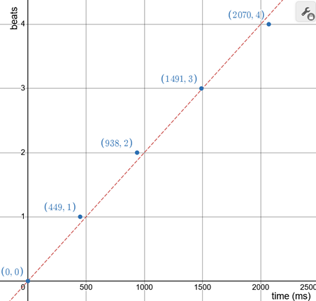

BPM Calculator | source on GitHub
Usage
This website is a tool that gives a beats-per-minute estimation of the rate of your inputs. For me, this is mainly relevant for music, but other applications are possible (e.g. heart rate). I use tools like this when writing charts for rhythm games or when I'm just curious about the speed of a song.
To use it, type a key on your keyboard or click (outside the box) to the beat of whatever it is you are trying to measure. After two inputs, the UI will update and give you estimations of the rate of your taps in beats per minute. Generally speaking, more data will result in more accurate estimations. You can adjust the reset timing by clicking the arrows.
Algorithms
Since the inputs are from a human, there will naturally be some variation: some will be a little early, and others a little late. I used three different algorithms used for computing bpm estimations from these noisy measurements, each with their own benefits and shortcomings. Before we get into it, let's frame the problem a little more formally.
Inputs are collected as a list of timestamps; the first timestamp corresponds to the first beat (and so on). When reasoning about this problem, it was helpful to imagine plotting this data on a coordinate plane. Here's an example with some simulated data (thank you desmos):
The x-axis corresponds to the time since the first measurement and the y-axis corresponds to the number of beats before that measurement (i.e. its index in the list of timestamps). The red dashed line is the "corect"
Recall that $ \text{slope} = \frac{\Delta y}{\Delta x} = \frac{\text{rise}}{\text{run}} $. In our encoding, a change in y (a "rise") corresponds to an increase in counted beats, and a change in x (a "run") corresponds to a change in time. This means slope is a measure of $ \frac{\text{beats}}{\text{time}} $, or beats per minute! In other words, we want to find a slope that's representative of the data.
Direct
The most straightforward way of doing this is to measure the slope of the line connecting the endpoints of our data. One issue with this method is that if the start or end are especially noisy compared to the rest of the data, the resulting BPM estimation could be very far from the correct value. Though, this noise's effect diminishes as the number of samples increases.
The implementation of this algorithm is quite simple and runs in constant time.
pub fn direct_count(offsets: &[u64]) -> f64 {
// get the first and last values
let start = offsets[0];
let end = offsets.last().unwrap();
// calculate the change in time
let delta = end - start;
// len - 1 is used so only one of start/end is counted
let count = (offsets.len() - 1) as f64;
count * 60_000_f64 / delta as f64
}
Least-Squares Linear Regression
The direct approach above works reasonably well, but we're ignoring a lot of our data. Instead of just fitting a line to first and last data point, we can find the line that fits all of our data the best. The notion of fitting a function to data is called regression, and there are many different approaches we could take.
The underlying model of our data is a linear equation:
$$ y = mx + b $$
$ y $ (the number of beats) increases at a constant rate with respect to $ x $ (the time elapsed). $ m $ is this rate of increase (the slope) and is proportional to the bpm. $ b $ is the y-intercept and accounts for the input offset and any constant error, but it's not necessary for computing $ m $ which is what we're after.
This model can "predict" what our number of beats should be, given a certain timestamps. It'll probably be a little wrong, but we can quantify this error by subtracting the actual measurement by the computed measurement and squaring it.
$$ (y_i - (mx_i + b))^2 $$
The line that minimizes this error across all of our data is the least-squares regression line.
Why are we squaring the error? All the error values should be positive so when we add them up across all our data points they accumulate instead of canceling out. Technically, absolute value would also do this, but squaring the error makes the math much easier.
The result of the math above is the following equation:
$$ m = \frac {\sum\limits_{i=0}^n{x_i y_i} - n\bar{x}\bar{y}} {\sum\limits_{i=0}^n{x_i^2} - n\bar{x}^2} $$
And here's the implementation of this formula in Rust:
pub fn simple_regression(offsets: &[u64]) -> f64 {
let (sum_x, sum_x_squared, sum_xy) = offsets
.iter()
.enumerate()
.fold((0_u64, 0_u64, 0_u64), |(sx, sxx, sxy), (y, x)| {
(sx + x, sxx + x * x, sxy + (y as u64) * x)
});
let n = offsets.len() as f64;
let mean_x = sum_x as f64 / n;
let mean_y = (n - 1_f64) / 2_f64;
let slope = // beats per millisecond
(sum_xy as f64 - n * mean_x * mean_y) /
(sum_x_squared as f64 - n * mean_x * mean_x);
slope * 60_000_f64
}
Since the data points are processed one-by-one, one could implement this as a
streaming algorithm where we store and update sum_x, sum_x_squared and
sum_xy as each timestamp comes in. This is more efficient because we don't
have to loop through all of our timestamps every time a new one is added.
However, since the performance of the $ O(n) $ algorithm wasn't an issue for the
usability of the website, I decided this would be a preemptive optimization.
In general I find this algorithm to converge to the "true" bpm faster than the direct approach. Instead of waiting for the noise in the initial sample to be rounded off by a large enough delta-t, the guess is improved with every new point that we add!
Thiel-Sen Estimator
When doing research on Linear regression, I learned about the Thiel-Sen estimator. It's similar to the first approach where we draw a line between two of our samples and measure its slope. However, instead of just looking at the two endpoints, we consider every pair of points in our dataset.
From the set of lines that connect each pair, you can take the median slope and y-intercept to form a linear equation. This estimator fits the data quite well, and is very resistant to outliers!
This algorithm's strengths come from using the median as the mechanism for representing the data. Compared to the mean (the "average"), the median (the middle value when sorted) isn't affected as much by an extreme value. For the purposes of the website, if you accidentally tap too early or late but keep the correct number of beats, the Thiel-Sen estimator will be more accurate than the simple linear regression.
Here's the implementation in Rust:
pub fn thiel_sen(offsets: &[u64]) -> f64 {
let mut slopes: Vec<_> = offsets
.iter()
.enumerate()
.tuple_combinations()
// indices (number of beats) are the y-values
.map(|((y1, x1), (y2, x2))| (y2 - y1) as f64 / (x2 - x1) as f64)
.collect();
let mid = slopes.len() / 2;
let (_left, median, _right) = slopes.select_nth_unstable_by(mid, |a, b| a.total_cmp(b));
*median * 60_000_f64
}
Shout out to itertools for tuple_combinations (the hard part).
The number of possible pairs of points grows quite quickly (caused by the call to tuple_combinations) so this algorithm runs in $ O(n^2) $ time. Like the simple linear regression case, this too is avoidable. You can randomly sample from the pairs of points (which works quite well!) or use a more complicated algorithm that runs in $ O (n \log n) $ time. Once again, since the website ran smoothly without these optimizations I figured it would be hasty for me to "fix" something that already works.
Design
When writing the basic functionality of the site I was a little torn on how I wanted it to look. I kept things simple (no CSS) while I worked on building out the functionality, and then I spent an afternoon deciding on a visual style/direction. I felt inspired by my terminal, and thought that monospace was an aesthetic I wanted to see in tools for non-developers (like this one). I opened Microsoft Notepad and started experimenting with the layout.
While adding descriptions to the end of each BPM prediction two of them happened to be the same line length. This coincidence always brings me a very specific kind of satisfaction, but I also remembered that it didn't have to be a coincidence.
A few years ago, I saw someone post this guide this guide to speedrunning Super Metroid by rs1n. At first glance it seems pretty normal, but if you look closely, you'll realize that the words and punctuation were carefully chosen so that each line is exactly the same length.
I decided that I would follow in rs1n's footsteps (the first few, at the very least) and force each of the labels to be the same length. This way, they would provide a straight right edge and give the interface a more structured feeling. I had to compromise on semantics and clarity, but I think the end result looks pretty cool!
Given enough time and flexibility with the exact idea that you want to convey, I think it's generally possible to re-word most passages to be fully-justified monospace. The English language is surprisingly capable when it comes to this specific task, and I think it was a pretty fun exercise. You should try it out sometime!
Closing Thoughts
Man, this kind of took me a while to make. I think I bit off more than I should have with this blog post, but there are so many little things about this project that I want to share.
For example, if you know anything about web development, you might be wondering why all my code snippets are in Rust instead of JavaScript. To build this website, I used Leptos - a Rust web framework that compiles to WebAssembly! I really enjoyed using it and Rust's type system in the context of this project and I am excited to tinker around with it some more!
I could probably write several more paragraphs on just Leptos alone, but I also want to get this project to a state where I can share it with the world and move on to newer things!
Thank you for sticking around this long, and I hope you found some of this interesting!